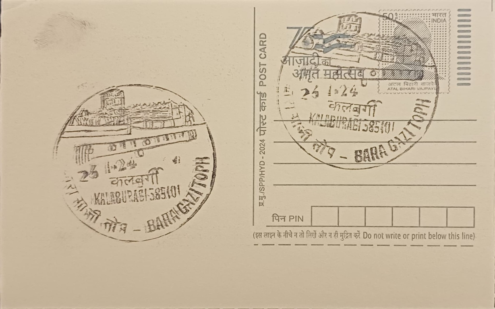

Bara Gazi Toph
ಬಾರಾ ಗಾಜಿ ತೋಪ್


The name Bara Gazi Toph translates roughly to the "great cannon" or "twelve-gauge cannon," a title befitting a weapon long reputed to be among the largest of its kind surviving from medieval India. Local tradition and tourism literature credit it with being the world's longest cannon of its category, a claim tied closely to its unusual composition: it is said to have been cast from panch-dhatu, an alloy of five metals, rather than plain iron or bronze, lending the barrel both its distinctive surface and its popular renown among visitors to Kalaburagi fort.
Positioned on the western flank of the Bahmani-era fort at Kalaburagi (formerly Gulbarga), the Bara Gazi Toph belongs to a larger ensemble of roughly two dozen cannons still housed within the fort's ramparts, several of which were cast or installed by Turkish artisans during the fourteenth century. Its significance lies less in any battlefield record and more in what it represents institutionally: physical proof of the advanced metallurgical and military-engineering capacity the Bahmani Sultanate commanded from its earliest capital, at a time when Gulbarga functioned as the seat of the first independent Islamic state to emerge in the Deccan.
The fort itself was originally raised by a local Hindu chieftain, Raja Gulchand, before being substantially rebuilt and fortified after 1347 by Ala-ud-Din Bahman Shah, founder of the Bahmani dynasty, who broke away from the Delhi Sultanate and made Gulbarga his capital until the seat of power moved to Bidar in 1424. Within this double-walled fort, encircled by a roughly three-kilometre rampart and a moat some thirty feet wide, the Bara Gazi Toph is recorded at approximately 29 feet in length, with a circumference near 7.6 feet, a bore diameter of about 2 feet, and barrel walls roughly 7 inches thick, giving the piece an estimated weight in the range of 70 to 75 tonnes.
A distinctive structural feature of the cannon is the row of twenty iron rings fixed along its upper surface, fittings used to haul and reposition the massive barrel; accounts suggest that moving the gun into firing position required teams of around twenty men working the rings in tandem, underscoring how much manpower large-calibre ordnance of this era demanded even before it was fired. The fort complex around it was similarly built for defense in depth, with fifteen watch towers and twenty separate cannon towers studding its walls, of which the Bara Gazi Toph remains the most frequently cited centerpiece in descriptions of the site's military architecture.
Today the cannon and its surrounding fort fall under the protection of heritage and tourism authorities in Kalaburagi district, which list the fort among Karnataka's notable Bahmani-period monuments alongside its mosque, granaries, and bastions. The Bara Gazi Toph is regularly highlighted in state tourism material and local press as the fort's signature artefact, drawing visitors specifically to view a gun whose size and alloy construction set it apart from the smaller cannon pieces ranged along the same ramparts.
| Date of Introduction | November 26, 2024 |
|---|---|
| Address | Senior Postmaster, |
| Kalaburagi HO, | |
| Kalaburagi (dt.), Karnataka - 585101. |